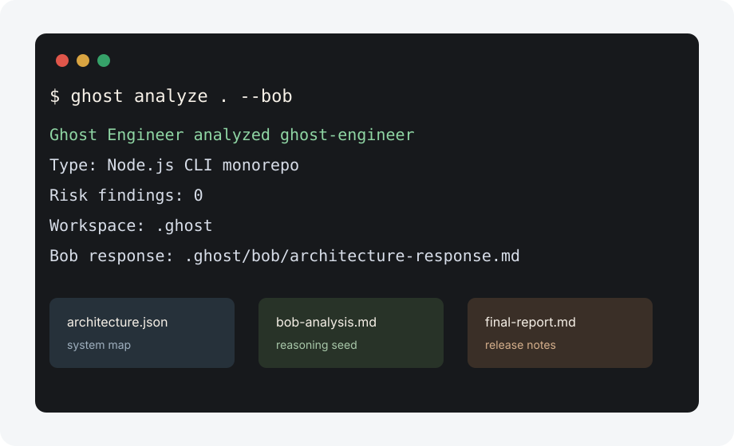

Architecture
`architecture.json`, `dependency-map.json`, and `project-summary.md` capture structure, scripts, packages, and entry points.
IBM Bob powered CLI
Detect your environment, link the source-built CLI globally, verify Bob when available, and generate the local `.ghost/` workspace from one guided screen.

curl -fsSL https://ghost-engineer.dev/install.sh | bash
ghost analyze .
ghost explain
ghost analyze . --bobgit clone https://github.com/deepdevjose/ghost-engineer.git
cd ghost-engineer
npm install
npm run build
cd apps/cli
npm link
cd ../..
ghost analyze .Local workspace
`architecture.json`, `dependency-map.json`, and `project-summary.md` capture structure, scripts, packages, and entry points.
`bob/*-prompt.md` and `bob/*-response.md` preserve the exact context sent to IBM Bob.
`docs/`, `patches/`, and `reports/` keep onboarding, initial analysis, test, patch, and release notes together.